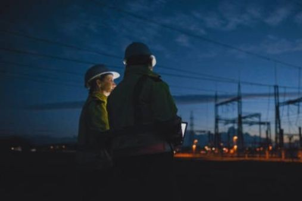

Smart electricity monitoring and outage reporting platform for Sierra Leone.

PowerTrack SL is a digital platform designed to help communities across Sierra Leone report electricity outages and receive real-time updates about power restoration and maintenance.
To become Sierra Leone's leading digital platform for electricity monitoring, outage reporting, and public energy awareness.
To provide citizens with a reliable and easy-to-use platform for reporting electricity issues and receiving real-time updates.